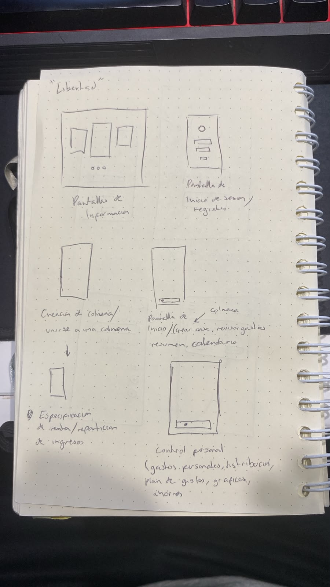
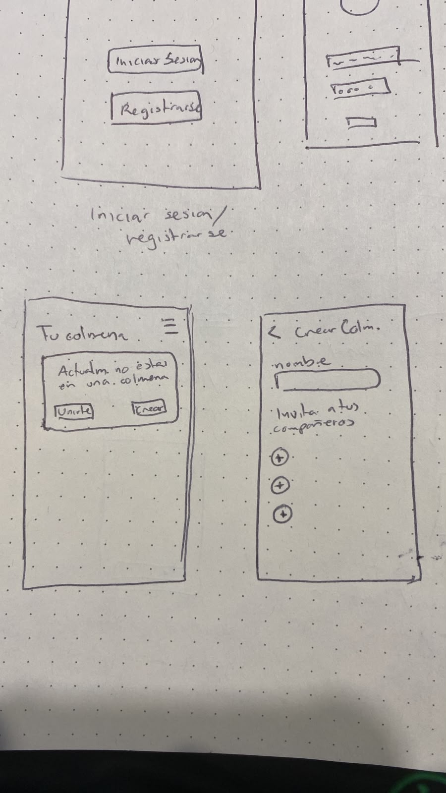
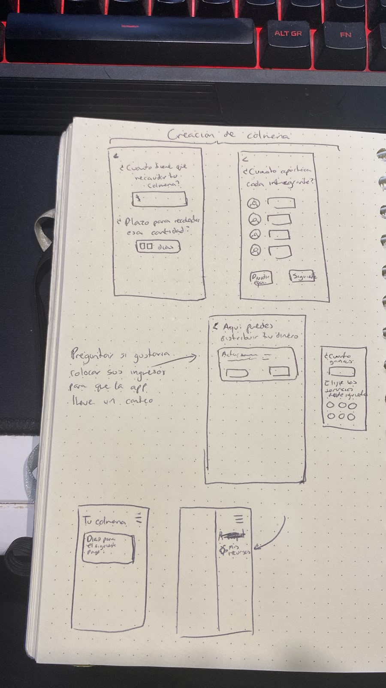
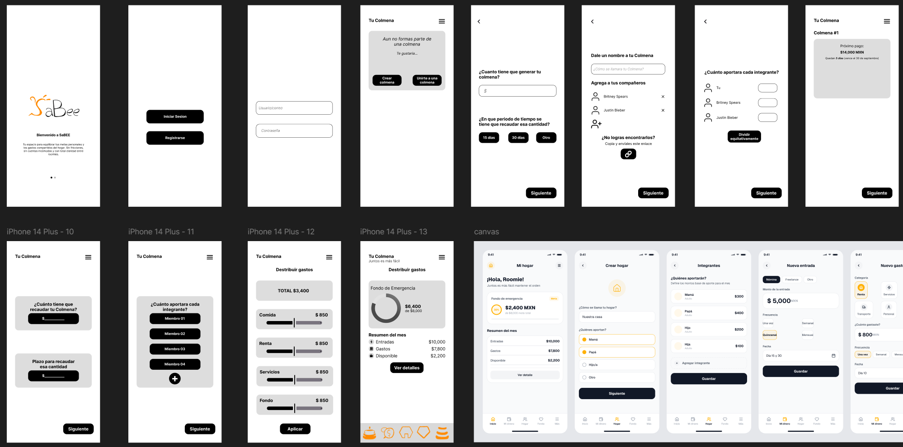

Autoengaño
Esos pequeños gastos diarios que parecen inofensivos pero vacían el fondo.
Bienvenido al blog. Aquí irá el contenido principal de la sección de inicio.
Como el proyecto está en etapa de desarrollo conceptual…
Como el proyecto está en etapa de desarrollo conceptual y aún no se han realizado pruebas de acercamiento el diseño se articuló a partir de una hipótesis de usuario basada en la investigación inicial y referentes secundarios. Se plantea que el usuario objetivo —jóvenes adultos en transición a la independencia habitacional y financiera en México— tiene disposición a usar herramientas digitales de gestión, siempre que no impliquen un costo cognitivo alto ni una verificación estricta. Parte del supuesto de que este perfil busca tener control sobre su dinero y su convivencia, pero rechaza las interfaces rígidas, las hojas de cálculo complejas o las dinámicas de cobranza invasivas entre roomies o familiares. Bajo esta premisa, la hipótesis sostiene que: Adopción gradual: La herramienta se aceptará mejor si permite iniciar con un solo módulo (el de necesidad más inmediata) en lugar de exigir la configuración de un sistema completo desde el inicio. Mediación neutral: Usar la interfaz para recordar pagos o asignar tareas reducirá la fricción interpersonal al pasar la responsabilidad del aviso a la aplicación y no a la persona. Motivación visual: El hábito del ahorro se sostendrá solo si el seguimiento es visual y está ligado a metas personales a corto plazo, evitando la apatía que provocan los métodos de ahorro tradicionales. Este planteamiento sirve como guía actual de trabajo y está pendiente de comprobación, por lo que se ajustará o corregirá cuando se realicen las pruebas con prototipos y usuarios en las siguientes etapas.
El diseño de esta propuesta traduce las dinámicas…
El diseño de esta propuesta traduce las dinámicas teóricas en decisiones de interfaz y experiencia de usuario concretas, estructuradas en cuatro pilares de diseño: 1. Arquitectura modular y onboarding flexible El flujo de entrada responde al ritmo de cada usuario. Al permitir activar de forma libre una, dos o las tres funciones principales, la aplicación evita la saturación inicial y respeta la autonomía de uso. En lugar de imponer una estructura rígida, la pantalla de inicio permite adaptar la herramienta al nivel de independencia financiera y habitacional que la persona necesita gestionar en su momento actual. 2. Cognición distribuida y reducción de fricción social El módulo de Acuerdos y Convivencia funciona como un espacio para hacer visible lo que normalmente queda implícito en el hogar. Para evitar el desgaste de las discusiones verbales sobre dinero o limpieza, la interfaz sustituye la confrontación directa por un tablero claro: tareas con rotación automatizada, desglose de cuentas compartidas en formato "quién debe a quién" y opciones de verificación como el registro fotográfico. De este modo, el seguimiento de las reglas deja de depender de la memoria o la insistencia personal y pasa a un acuerdo visual común. 3. Visualización de información y bajo desgaste cognitivo El módulo de Proyección de Gastos simplifica el seguimiento del dinero mediante un dashboard semanal. En lugar de presentar tablas complejas o listas infinitas de transacciones, la pantalla muestra datos directos: saldo disponible en el periodo, consumo acumulado y una estimación del cierre de semana mediante gráficas diarias. Esta síntesis gráfica elimina la necesidad de hacer cálculos manuales constantes, facilitando una lectura rápida de la situación financiera. 4. Diseño visual y progresión de metas La dirección de arte basada en tonos verde esmeralda con acentos en azul y turquesa busca alejarse de la estética fría o estresante de los sistemas bancarios tradicionales, transmitiendo estabilidad y avance. Esto se complementa con la Banca de Ahorros, donde el progreso se representa mediante barras visuales asociadas a metas concretas (compras, viajes o fondos de reserva), cambiando la sensación de restricción por un seguimiento claro del avance hacia un objetivo. En conjunto, este planteamiento técnico explica cómo la estructura por módulos, la claridad de los desgloses y el manejo visual trabajan a la par para convertir los requerimientos del proyecto en una herramienta funcional y fácil de usar.
Esta propuesta se apoya en tres cuerpos teóricos distintos…
Esta propuesta se apoya en tres cuerpos teóricos distintos, cada uno explicando una parte del problema que la aplicación busca resolver. Bourdieu (1986) plantea el capital social como los recursos que se obtienen por pertenecer a una red de relaciones y reconocimiento mutuo. Dentro del hogar familiar ese capital ya existe, pero no resuelve por sí solo la fricción del dinero compartido. Gouldner (1960) ayuda a entender por qué: distingue entre una reciprocidad difusa, propia de los vínculos familiares, y una reciprocidad concreta, propia de una transacción regular. Sahlins (1972) va más allá y separa la reciprocidad generalizada del núcleo familiar de la reciprocidad equilibrada que rige relaciones más distantes. La aportación económica de un hijo o hija adulto queda atrapada entre estas dos lógicas: la familiar, donde "no se lleva la cuenta", y la económica, que exige precisión y puntualidad. De ahí surge la ambigüedad central del usuario: no sabe si lo que aporta es una obligación o un gesto voluntario. El módulo de acuerdos y convivencia responde justo a esto, volviendo explícito y sin necesidad de confrontación directa algo que normalmente se queda implícito: quién debe qué, cuándo y con qué reglas. La rotación automática de responsabilidades y el asignador de gastos compartidos sacan ese acuerdo de la memoria de cada persona y lo convierten en algo visible. Arnett (2000) describe la adultez emergente como la etapa entre los 18 y 29 años donde se ensaya la vida adulta sin haber consolidado todavía hábitos propios, con frecuencia sin haberse independizado por completo de la familia. Quienes atraviesan esta etapa con más recursos pueden equivocarse y corregir; el usuario de este proyecto no tiene ese margen, y termina improvisando acuerdos de convivencia sin experiencia previa. Esto es lo que justifica que la herramienta parta de cero: no asume que el usuario ya lleva un control financiero ni conoce un sistema de gestión, y por eso permite activar solo la función que necesita en ese momento. El nivel psicológico se sustenta en la teoría de la escasez de Mullainathan y Shafir (2013). Su argumento central es que la escasez económica no solo limita recursos, también ocupa la capacidad mental disponible para pensar en el futuro, produciendo un efecto túnel que prioriza lo urgente sobre lo importante. Un dashboard que muestre en tiempo real cuánto dinero queda disponible, cuánto se ha gastado y cuál será el saldo al cierre de la semana no es un lujo visual: reduce la carga de tener que calcular todo eso mentalmente, justo la capacidad que la escasez consume. El módulo de ahorro se apoya en el trabajo de Thaler y Sunstein (2008) sobre nudges, empujones conductuales de bajo costo que cambian decisiones sin restringir opciones. Carballo y Girbal (2021) encontraron, estudiando fintech en América Latina, que los recordatorios automáticos funcionan particularmente bien para que el ahorro no quede pospuesto frente a otras urgencias del día a día, el mismo efecto túnel descrito antes. Por eso el ahorro dentro de la app no depende de que el usuario se acuerde de apartar dinero: se automatiza un porcentaje del presupuesto sobrante y se conecta a metas visibles y concretas. Ninguna de estas funciones pretende resolver la causa económica estructural del problema, algo que evidentemente está fuera del alcance de una aplicación. Lo que sí puede hacer el diseño es intervenir donde realmente tiene margen: la ambigüedad social de aportar dinero en casa, la carga mental que impone la escasez, y la dificultad de sostener el ahorro sin un empujón externo.




¿Cómo podríamos diseñar una herramienta que reduzca las fricciones en la vivienda compartida mientras fortalece la salud financiera de los adultos jóvenes?
"Los involucrados conocen las cifras exactas y las fechas de pago, pero aun así evaden las conversaciones financieras y caen en incumplimientos."
"Los jóvenes entienden el valor racional de llevar un presupuesto, pero abandonan las aplicaciones financieras porque la captura de datos es tediosa, moralista y no ofrece gratificación frente al hábito de consumo inmediato."
"Guardar dinero sin un objetivo tangible provoca que la disciplina falle a la tentación del gasto diario."
"El usuario prefiere asumir una pérdida económica personal o tolerar faltas antes que cobrar, porque teme ser visto como conflictivo, interesado o poner en riesgo la relación con su compañero."
"Préstamos 'a costo cero' o sin intereses suele desvalorizarse, propiciando el incumplimiento de pago. El compromiso financiero requiere cierta responsabilidad o costo percibido para ser respetado."
"El mayor gasto monetario no viene de los gastos fijos. El mayor gasto viene de los gastos hormiga."
"La gente joven desconoce la proporción real de su dinero."
"Los conflictos graves en una vivienda rara vez detonan por un problema mayúsculo inmediato; comienzan con faltas pequeñas, postergaciones de pago cotidianas o desatención de tareas compartidas."
"Al mudarse juntos, las personas definen reglas iniciales o asumen las costumbres que aprendieron en sus casas familiares, pero rara vez se sientan a actualizarlas."
"Las aplicaciones de gastos fallan con jóvenes debido a su apariencia de una hoja de cálculo."
Prototipo beta · 10 días
Eres un ingeniero novato. Tu nave se estrelló en un planeta cuya estrella va a colapsar en 10 días. Tus jefes mandan piezas cada día para pagar tu rescate, pero no pueden mandar más. Con eso tienes que reparar el motor y, si puedes, completar el robot: tu colchón para lo que falle en el viaje.
El motor es tu ahorro. El robot solo se abre en emergencias.
Esos pequeños gastos diarios que parecen inofensivos pero vacían el fondo.
Quedarse en ceros genera una frustración enorme.
No tener un colchón para cuando las cosas salen mal.
La gente se va a olvidar de lo que dijiste, la gente se va a olvidar de lo que hiciste, pero la gente nunca se olvidará de cómo la hiciste sentir.
— Maya Angelou
Cada día recibes piezas y tomas una decisión financiera dentro de la historia. ÍO, la IA de la nave, te narra la bitácora; el motor representa tu ahorro y el robot tu fondo de emergencia. Si algo no alcanza, puedes tomar del motor, pedir a Krel (deuda con interés) o apostar en la ruleta.


Filtro de segunda mano (150) o filtro nuevo (400): funciona por ahora, o cuesta más y dura más.
Defines cómo se reparten las piezas entre cartera, motor y robot.
Si no alcanza, tomas del motor, pides a Krel o apuestas en la ruleta.
Decides si apartas para el motor, para el robot o lo dejas al colchón.
La ruleta paga 18 de cada 37 veces: ganas o pierdes.
Pago de emergencia, pedir a Krel o reponer el robot desde el motor.
Según tu decisión del día 1, enfrentas la falla o revisas tu regla de reparto.
Otro gasto que puede no alcanzar: fiado con Krel o ruleta.
Eliges si reparas el motor; si no alcanza, lo ves de inmediato.
Última apuesta, cobro de Krel, última llamada del taller y despegue.
Llegas al despegue con el motor reparado y colchón.
Despegas, pero sin margen para lo que falle en el viaje.
No logras reparar el motor y dependes de que te rescaten.
Un día en este planeta duró lo que una quincena en la Tierra.
La escasez también ocupa la mente y deja menos espacio para planear (Mullainathan y Shafir, 2013). El colchón no te hace rico: te da tiempo para decidir con calma.
Fuentes: CONASAMI, salarios mínimos 2026 · INEGI, líneas de pobreza por ingresos · Condusef, fondo de emergencia · Banxico y Condusef, CAT de tarjetas de crédito · Banxico, CETES a 28 días · INEGI, INPC · Mullainathan, S. y Shafir, E. (2013). Scarcity: Why having too little means so much.
El prototipo de alta fidelidad es una experiencia interactiva que ayuda a adultos jóvenes a practicar su autonomía financiera: tomar decisiones propias sobre su dinero y sostenerlas, aun bajo presión, cansancio o imprevistos.
Nace del proyecto inicial sobre jóvenes que no ahorran, pero el problema ya no se plantea como falta de conocimiento. Se plantea como la dificultad de convertir lo que ya se sabe en acciones constantes.
Persona joven adulta que quiere cuidar su dinero y cumplir metas personales, como un viaje, un equipo nuevo o un fondo de reserva. Tiene claro que debería ahorrar; lo que le cuesta es sostenerlo en el día a día.
Las cartas de amor y ruptura con las finanzas mostraron una relación ambivalente: gratitud y esperanza mezcladas con miedo, agotamiento y angustia, y ciclos de alivio momentáneo seguidos de meses de incertidumbre.
El proyecto no busca resolver la causa económica de fondo, como los salarios o el costo de la vivienda, sino la parte que sí puede intervenir el diseño: la relación de la persona con sus propias decisiones. Este perfil es una hipótesis de trabajo, pendiente de las pruebas de acercamiento con usuarios.
Cinco ideas explican el problema y justifican que la solución sea un juego.
Sigue la lógica de VARADO: eres un ingeniero novato cuya nave se estrelló en un planeta que colapsará en diez días. Cada día tus jefes mandan piezas y tú decides cómo usarlas, mientras ÍO, la IA de la nave, narra la bitácora.
Hay tres finales: Escape seguro (motor reparado y colchón), Escape frágil (despegas sin margen) y Rescate (no logras reparar el motor). Al terminar, el juego revela los datos reales detrás de cada número, con sus fuentes.
Frente al primer prototipo, una app con calculadoras y tableros, el diseño pasa de una herramienta que informa a una experiencia que se vive.
ÍO te cuenta qué pasó y qué decisión toca hoy. Tu meta: reparar el motor y despegar.
Mira cuánto tienes en la cartera, el motor, el robot y la deuda con Krel antes de decidir.
Cada día llegan piezas nuevas. Decide cuánto va a la cartera, al motor y al robot.
Si no alcanza, puedes tomar del motor, pedir a Krel (con interés) o apostar en la ruleta. Cada opción tiene consecuencias.
Revisa cómo quedaron tus recursos. El robot solo se abre en emergencias.
En el día 10 sabrás si lograste un escape seguro, uno frágil o un rescate, y verás los datos reales detrás del juego.
¿Cómo podríamos permitir a adultos jóvenes practicar decisiones de ahorro en un entorno seguro, para que ganen control y tranquilidad sobre su dinero y sostengan sus metas sin autoengaño ni culpa?
Del “sé qué debo hacer” al hacerlo.
Fallar no cuesta dinero ni autoestima.
Colchón, claridad y confianza en lo que se aconseja.
Las dos emociones que rompen el hábito.
Los adultos jóvenes que quieren ahorrar no logran sostenerlo. No les falta información: les falta convertir lo que saben en acciones constantes, porque la presión del momento, el autoengaño y la culpa terminan decidiendo por ellos.
El proyecto no pretende resolver la causa económica de fondo, sino la relación de la persona con sus propias decisiones.
Se conecta con → Usuario
Persona joven adulta con metas personales (viaje, equipo nuevo, fondo de reserva) que sabe que debería ahorrar y no logra sostenerlo.
Hipótesis de trabajo, pendiente de validar con pruebas de acercamiento.
Se conecta con → Insights
De las Love & Breakup Letters
Del primer prototipo
Se conecta con → Teoría
Se conecta con → Principios de diseño
Se conecta con → Reto de diseño
¿Cómo podríamos permitir a adultos jóvenes practicar decisiones de ahorro en un entorno seguro, para que ganen control y tranquilidad sobre su dinero y sostengan sus metas sin autoengaño ni culpa?
Se conecta con → Propuesta
VARADO: un juego de diez días en el que cada decisión financiera ocurre dentro de una historia. El motor es el ahorro, el robot es el colchón, Krel es la deuda y la ruleta es el atajo. Tres finales posibles y, al terminar, los datos reales detrás de cada número.
Información sobre esta persona: su rol en el proyecto, experiencia o lo que quieras destacar.
Información sobre esta persona: su rol en el proyecto, experiencia o lo que quieras destacar.
Información sobre esta persona: su rol en el proyecto, experiencia o lo que quieras destacar.